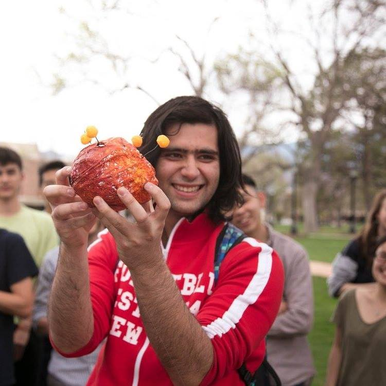

|  |
I'm a senior at Colorado College, majoring in Physics. I'm broadly interested in Quantum Computation and Classical Electrodynamics. My past work includes work in fields of: Electronic Circuit Design, Computer Architecture, Mathematical algorithms for Physics and Computer Science, Complex Analysis, and Electromagnetic theory.
Here are the courses that I've taken. |